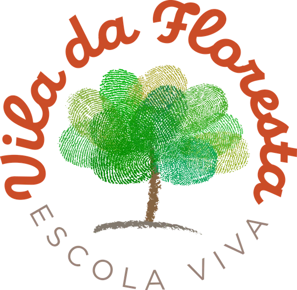

Educação Infantil e Ensino Fundamental I
Vila Velha/ES
Uma escola para crescer inteiro.
Da Educação Infantil ao Ensino Fundamental I, um caminho com inspiração Waldorf, natureza e relações que acolhem cada jeito de ser.
Inauguração em janeiro de 2027 · Matrículas 2027 abertas
O que é a Pedagogia Waldorf?
Uma pedagogia que acompanha as fases do desenvolvimento da criança e integra conhecimento, arte, movimento, natureza e relações humanas.
Na Vila da Floresta, essa inspiração se traduz em um convite a pensar, sentir e fazer, com respeito à singularidade de cada criança e ao tempo da infância.
Nossa proposta pedagógica alia essa inspiração às aprendizagens essenciais previstas na Base Nacional Comum Curricular (BNCC), da Educação Infantil ao Ensino Fundamental I, respeitando as características de cada etapa e acompanhando o desenvolvimento de cada criança.
Escola, família e comunidade. O caminho é junto.